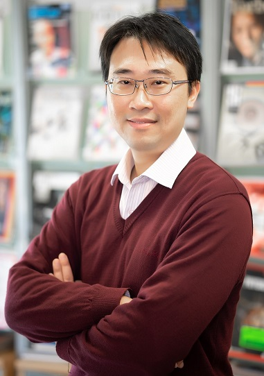

|  |
Fang-Chung ChenDistinguished Professor Department of Photonics, National Yang Ming Chiao Tung University (NYCU) Hsinchu, Taiwan Principal investigator of Organic Electronics Lab. at NYCU (NCTU) Email: fcchendop@nycu.edu.tw TEL: +886-3-5131484 |
Dr. Fang-Chung Chen is a professor in Department of Photonics, National Yang Ming Chiao Tung University (National Chiao Tung University).
He has published more than 160 SCI papers. His h-index is 51 (Google Scholar).
Nanoscale & Nanoscale Advances Blog interviews the authors.
This paper is also highlighted by AIP PRESS RELEASE.